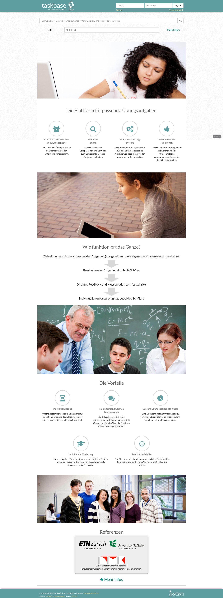
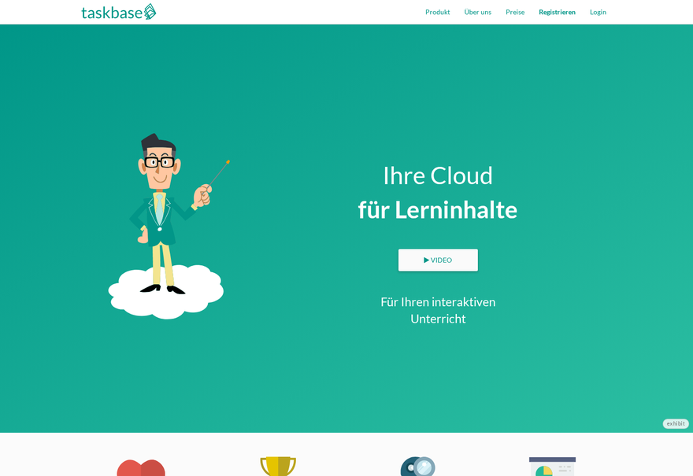
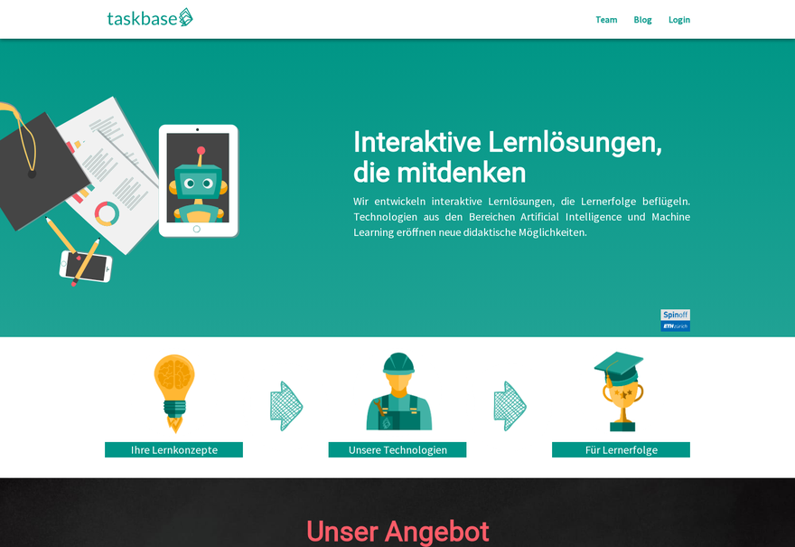
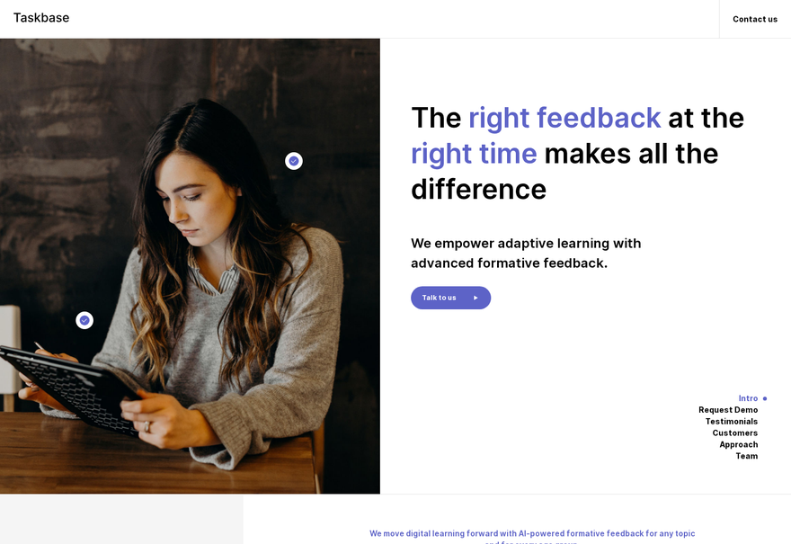
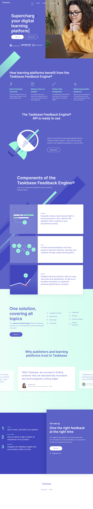

<meta charset="utf-8">
<title>Taskbase Homepage Museum</title>
<meta name="viewport" content="width=device-width,initial-scale=1">
<style>
:root{--bg:#0d0e12;--card:#16181f;--line:#252833;--fg:#e8e9ee;--dim:#8b8f9e;
--ok:#4ade80;--partial:#fbbf24;--broken:#f87171;--accent:#7dd3fc}
*{box-sizing:border-box}
body{margin:0;background:var(--bg);color:var(--fg);
font:15px/1.5 ui-sans-serif,-apple-system,"Segoe UI",Roboto,sans-serif}
header{padding:56px 32px 28px;max-width:1400px;margin:0 auto}
h1{margin:0 0 8px;font-size:30px;letter-spacing:-.02em}
header p{margin:0;color:var(--dim);max-width:62ch}
main{max-width:1400px;margin:0 auto;padding:8px 32px 72px;
display:grid;gap:20px;grid-template-columns:repeat(auto-fill,minmax(320px,1fr))}
a.card{display:flex;flex-direction:column;background:var(--card);color:inherit;
text-decoration:none;border:1px solid var(--line);border-radius:12px;overflow:hidden;
transition:border-color .15s,transform .15s}
a.card:hover{border-color:var(--accent);transform:translateY(-2px)}
.shot{aspect-ratio:16/11;background:#0a0b0e;overflow:hidden;border-bottom:1px solid var(--line)}
.shot img{width:100%;display:block}
.shot.empty{display:grid;place-items:center;color:var(--dim);font-size:13px}
.body{padding:14px 16px 16px}
.top{display:flex;align-items:baseline;justify-content:space-between;gap:10px}
h2{margin:0;font-size:16px;font-weight:600}
.era{color:var(--dim);font-size:13px;white-space:nowrap}
.meta{margin-top:10px;display:flex;flex-wrap:wrap;gap:6px}
.chip{font-size:11px;padding:2px 8px;border-radius:99px;border:1px solid var(--line);color:var(--dim)}
.chip.st{border-color:transparent}
.st-ok{background:rgba(74,222,128,.12);color:var(--ok)}
.st-partial{background:rgba(251,191,36,.12);color:var(--partial)}
.st-broken{background:rgba(248,113,113,.12);color:var(--broken)}
.notes{margin:10px 0 0;color:var(--dim);font-size:13px;overflow:hidden;
display:-webkit-box;-webkit-box-orient:vertical;-webkit-line-clamp:6;line-clamp:6}
a.card:hover .notes{-webkit-line-clamp:none;line-clamp:none}
footer{max-width:1400px;margin:0 auto;padding:0 32px 48px;color:var(--dim);font-size:13px}
</style>
<header>
<h1>Taskbase Homepage Museum</h1>
<p>Every taskbase.com homepage we could dig up, from the Internet Archive and from
git history. Visuals only &mdash; forms, analytics and backends are stripped or dead.
Click a card to open that homepage.</p>
</header>
<main><a class="card" href="sites/2015-08-webapp-landing/" target="_blank" rel="noopener">
<div class="shot"></div>
<div class="body">
  <div class="top"><h2>Taskbase 2015 — first landing page</h2>
  <span class="era">2015-08 – 2016-01</span></div>
  <div class="meta"><span class="chip st st-ok">ok</span><span class="chip">AngularJS 1.3.20 + ui-router inside the Java/Tomcat webapp, Bootstrap 3.3.4, SCSS</span><span class="chip">git</span></div>
  <p class="notes">Real AngularJS run, not a mock-up: the era&#x27;s own taskbaseApp module boots on its own vendored bower_components (angular 1.3.20), ui-router fills the header / main / footer views and every ng-if evaluates. The whitelabel markup is untouched — serving from a host that is not e-maths, mintbase or e-lectures is what selected the taskbase variant. The dead Java backend is an $httpBackend decorator answering api/settings and api/login with the era&#x27;s own Settings defaults (cssId &#x27;taskbase&#x27;, ldapLogin false); the Lucene index is gone, so the search widget renders and a query comes back empty. Styling is the era&#x27;s committed gulp-compiled assets/css/app.css, no SCSS re-flattening. google.load and MathJax.Hub.Config are no-op shims, Google Analytics stripped, Lato and Raleway vendored locally. Snapshot 7739ba389a (2015-12-17) is the last commit that shows both the task-search widget and the marketing copy: two days later 9dcdc79ecc moved the copy behind ng-if=&quot;!frontEndSettings.landingPageSearch&quot;, which is false on every taskbase host, leaving the landing page as logo + two buttons + search bar. Layout is inferred from source alone — no archive capture of this era exists, taskbase.com was an unrelated &#x27;free horserace calculator&#x27; site into March 2016 and the app lived on taskbase.org, first captured in 2018 and empty. Lived at components/landing/ until the 2016-01 &#x27;MOVE AROUND A LOT OF STUFF&#x27; reshuffle.</p>
</div></a><a class="card" href="sites/2016-04-webapp-redesign/" target="_blank" rel="noopener">
<div class="shot"></div>
<div class="body">
  <div class="top"><h2>Taskbase 2016 — webapp marketing site</h2>
  <span class="era">2016-04 – 2018-03</span></div>
  <div class="meta"><span class="chip st st-ok">ok</span><span class="chip">AngularJS 1.5.9 + Angular Material 1.1.1 + ui-router inside the Java/Tomcat webapp, Bootstrap 3.3.7, gulp-compiled SCSS, TypeScript</span><span class="chip">git</span></div>
  <p class="notes">Real AngularJS run, not a reconstruction: the era&#x27;s own taskbaseApp module, templates, controllers and components boot, so the ng-repeat value-proposition strip (Organisieren / Motivieren / Automatisieren / Messen), the counter row and the reference logos render for real, and the header nav and footer are the era&#x27;s own components. Libs are pinned to taskbase/bower.json at this commit; assets/css/app.css and assets/js/app.js are the era&#x27;s committed build outputs byte for byte. The era&#x27;s TypeScript was compiled per file by tsc and never committed, and there is no tsc on this box, so the ~27 files this page needs were hand-transpiled into build/ (src/ keeps the originals); build/task-service.js is a partial port. The backend is an $httpBackend decorator in glue/museum.js — api/login returns loggedIn:false, which is what flips appReady. All copy is the era&#x27;s real words from the committed templates; the three counter numbers are reconstructed, since that API is dead and was never archived. Award and reference logos are the original Cloudinary files, mirrored locally. Layout is inferred from source alone: the 2016/2017 captures of taskbase.com hold only the SPA shell, no rendered DOM and no compiled bundles. Only the landing route is ported — the state table is registered so ui-sref resolves, but the nav links are inert and the other marketing pages sit in src/. Routing is hashbang, a static sub-path has no server routes. Trackers and the MathJax / Google Charts CDN calls are dropped; the e-maths / mintbase markup is intact, only Utils.urlContains is decorated. The video modal opens for real but that YouTube clip is now private.</p>
</div></a><a class="card" href="sites/2018-04-angular-relaunch/" target="_blank" rel="noopener">
<div class="shot"></div>
<div class="body">
  <div class="top"><h2>Taskbase 2018 — taskbase.com relaunch</h2>
  <span class="era">2018-04 – 2018-09</span></div>
  <div class="meta"><span class="chip st st-ok">ok</span><span class="chip">Angular 5.2.6 + Bootstrap 4.1, @angular/cli 1.7.1, Firebase hosting</span><span class="chip">git</span></div>
  <p class="notes">Real AOT production build of the original Angular 5 source, not a reconstruction. The redesign that became taskbase.com around 2018-04-20: Bootstrap 4 replaced Material, new jumbo, tech modules, customers, testimonials, offer, project, team, blog, contact form. Cross-checked against the Internet Archive snapshot of 2018-06-12 — same sections in the same order, and this build still has the images the archive lost. Contact form posts nowhere; Google Tag Manager stripped. Team page loads Google Maps live. Deep links (team, impressum, technology/0..5) work. The old specimen card is kept as specimen.html.</p>
</div></a><a class="card" href="sites/2021-03-craft-cms/" target="_blank" rel="noopener">
<div class="shot"></div>
<div class="body">
  <div class="top"><h2>Taskbase 2021 — Craft CMS homepage</h2>
  <span class="era">2021-02 – 2022-04</span></div>
  <div class="meta"><span class="chip st st-ok">ok</span><span class="chip">Craft CMS 3.7.11 (PHP 7.2.5, MySQL, Twig), hosted on servd.host; front end is hand-written CSS plus smooth-scrollbar and Swiper</span><span class="chip">wayback</span></div>
  <p class="notes">Mirror of the 2021-07-24 capture with the repo&#x27;s own CSS, JS, Inter fonts, favicons and video put back in. Craft kept every word and image in a MySQL database on servd.host and both the database and the servd asset volume are gone, so a real Craft 3.7.11 run (BUILDS.md) still dies on the homepage template&#x27;s line 3 looking for the logo asset — mirroring the rendered HTML is the only way to see this page. All four pages render: home, contact, media, privacy policy; full source under src/. The hero photo is back at its full 1000w and 2000w from the Imager transforms committed to the repo before Imager was switched off on 2021-02-10 — the same bytes servd&#x27;s image service returned. Two things the archive lost. The ETH Zürich customer logo is a 404 at every timestamp and replay modifier, so that wordmark comes from this site&#x27;s own 2022 WordPress mirror: a different derivative of one piece of brand artwork, not the file Craft served. And the process section&#x27;s TB_Content_2.png exists nowhere above its 10-pixel LQIP — every wayback capture of both servd hosts, id_/im_/if_ replay, Common Crawl 2021–22 and every commit of craft-homepage were checked — so that block shows the real placeholder the site itself faded out of, a genuine blur, not a stand-in. The video is web/videos/TB_Demo.mp4 from the last commit (2021-09-01), which replaced the CDN URL this capture still points at. Form posts nowhere, the servd CSRF fetch is stripped, the cookie banner is gone. preview.png needs smooth-scrollbar destroyed and the fade-ins forced: the page is one 100vh scroll container.</p>
</div></a><a class="card" href="sites/2022-04-wordpress-feedback-engine/" target="_blank" rel="noopener">
<div class="shot"></div>
<div class="body">
  <div class="top"><h2>Taskbase 2022 — &quot;The world&#x27;s #1 Feedback engine&quot;</h2>
  <span class="era">2022-04 – 2022-06</span></div>
  <div class="meta"><span class="chip st st-ok">ok</span><span class="chip">WordPress 5.9 + Elementor Pro + Slider Revolution</span><span class="chip">wayback</span></div>
  <p class="notes">First WordPress homepage: Elementor Pro on the Hello theme, with the &quot;Supercharge your digital learning platform&quot; hero typed out by typed.js and annotated with the product&#x27;s own spellcheck cards. The Slider Revolution testimonial carousel, the ElementsKit partner-logo strip and the Elementor scroll animations all run. Two museum-only CSS rules sit at the end of the body: the ElementsKit logo carousel&#x27;s init script was never archived, so its slides are laid out three across the way its own data-config (slidesPerView:3) had them instead of spilling past the page; and the testimonial carousel&#x27;s prev/next arrows (uploads/2022/04/{next,prev}-button-*.png plus the matching revslider svgcustom SVGs) were never crawled at any timestamp, so those two layers are hidden rather than drawn as broken images. Everything else on the page is archive-original. Cookie banner, Google Tag Manager and HubSpot are stripped; the contact form posts nowhere. Dead hosts are repointed at a local not-archived/ path so the page never reaches the network. preview.png needs a scroll pass first: Slider Revolution only starts a slider once it enters the viewport, so a cold --full shot catches the testimonial band empty.</p>
</div></a><a class="card" href="sites/2024-06-wordpress-hello/" target="_blank" rel="noopener">
<div class="shot"></div>
<div class="body">
  <div class="top"><h2>Taskbase 2024 — Hello Elementor rebuild</h2>
  <span class="era">2024-04 – 2024-10</span></div>
  <div class="meta"><span class="chip st st-ok">ok</span><span class="chip">WordPress 6.5 + Hello Elementor 3.0</span><span class="chip">wayback</span></div>
  <p class="notes">Wayback 2024-06-15, WordPress 6.5 + Hello Elementor 3.0. Was showing &quot;0x&quot; for all four impact counters and one blown-up slide in place of every carousel. Elementor loads its counter, image-carousel, loop, loop-carousel and nested-carousel handlers as runtime webpack chunks and the mirror had followed none of them; all five were still in the archive under taskbase.com and now sit under wp-assets/. Swiper 8.4.5 (elementor lib/swiper/v8) came from a 2024-11-25 capture. One chunk, elementor-pro nav-menu d43af66e, was never crawled, and its failure aborted Elementor&#x27;s handler loop - which is why the counters stayed at zero. It is replaced by the same chunk id from elementor-pro 3.22.0 where the site ran 3.21.0; that is the only foreign file here, and with it smartmenus initialises and the rest of the page comes alive. Zero broken images, no horizontal overflow, nothing reaching a live host. Forms are dead by design.</p>
</div></a><a class="card" href="sites/2025-05-wordpress-lms/" target="_blank" rel="noopener">
<div class="shot"></div>
<div class="body">
  <div class="top"><h2>Taskbase 2025 — personalized learning positioning</h2>
  <span class="era">2024-11 – 2025-10</span></div>
  <div class="meta"><span class="chip st st-ok">ok</span><span class="chip">WordPress 6.7 + Elementor 3.x</span><span class="chip">wayback</span></div>
  <p class="notes">Wayback 2025-05-15, WordPress 6.7 + Elementor 3.27 / Pro 3.25. Counters read &quot;0x&quot; and both carousels showed a single slide at full width. Elementor&#x27;s counter, image-carousel and nested-title-keyboard-handler chunks are missing from every taskbase.com capture but are byte-identical in the archived elementor 3.27.0 plugin zip, so they are restored exactly; nav-menu and text-editor came from taskbase captures, Swiper 8.4.5 from 2024-11-25. The counters now run to 10x / 55+ / 4x / 2x. The three Elementor Pro chunks (loop, loop-carousel, nested-carousel) are unrecoverable - not in Wayback or Common Crawl for this domain, and Pro is not on wordpress.org - so Swiper never initialises for &quot;Customer Stories&quot; and &quot;Shaping the digital learning landscape&quot;. museum.css lays those two rows out from the widgets&#x27; own data-settings (3 across, 24px and 48px gaps), which is what the same design renders in sites/2024-06-wordpress-hello, where the Pro chunks did survive; the fourth card stays clipped where the carousel left it. Both rows are static, not scrolling. Zero broken images, no horizontal overflow.</p>
</div></a><a class="card" href="sites/2026-live/" target="_blank" rel="noopener">
<div class="shot"></div>
<div class="body">
  <div class="top"><h2>Taskbase 2026 (live)</h2>
  <span class="era">current – captured 2026-09-03</span></div>
  <div class="meta"><span class="chip st st-ok">ok</span><span class="chip">Framer (Framer 8a671e2, server: Framer/feb0bfd, SSG-optimized; assets on framerusercontent.com)</span><span class="chip">live</span></div>
  <p class="notes">Homepage plus the 6 top-nav pages (ai-sales-coach, pricing, case-studies, about-taskbase, blog, book-a-call). www.taskbase.com and taskbase.com both serve the same page, no redirect and no rebrand; title is &#x27;AI Sales Coach&#x27;. Trackers stripped: GTM/GA4 (G-FR8WL8BPHF), HubSpot (js-eu1.hs-scripts.com/25948342), lemlist visitor tracking, events.framer.com, framer.com/edit. The Framer JS bundle (~30 .mjs modules) is stripped too, since it cannot resolve its dynamic imports offline; the SSR markup carries the full layout. Inline Framer appear-animation scripts are kept, so entrance fades still run. What does not survive: scroll-triggered motion and parallax, the case-study/testimonial carousels (frozen on whichever slide the SSR emitted, so a slide may differ from the live site), the header logo SVG (drawn by the bundle, blank on the live full-page shot too), FAQ accordions (open state only), and all forms/CTAs (links to non-captured pages such as /contact, /imprint, /privacy-policy, /terms-of-service, /product-cases point at the live site). Responsive image variants wider than 2048px were skipped to keep the copy at 31MB; 1440px rendering is unaffected. preview.png is the offline copy captured at 1440x900 full-page.</p>
</div></a></main>
<footer>8 homepages &middot; 8 ok &middot; TIRA-1478</footer>
